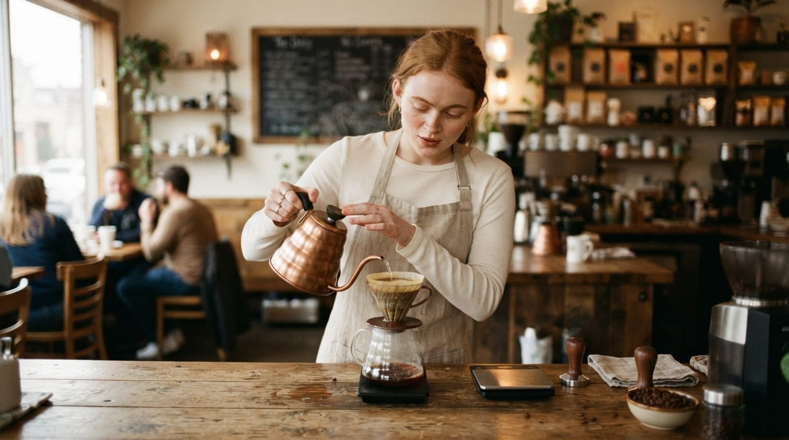
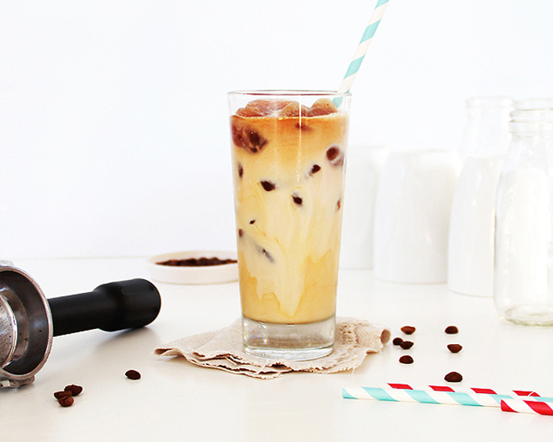

Galeri Kopi Nusa
Media Usaha


Nada Penanda Kedai
Nada uji singkat memastikan elemen audio dan kontrol browser dapat diperiksa.


Nada uji singkat memastikan elemen audio dan kontrol browser dapat diperiksa.
Kota: Pekalongan, Jawa Tengah
Jam Layanan: Senin - Sabtu, 08.00 - 21.00
WhatsApp: Hubungi Kopi Nusa melalui WhatsApp